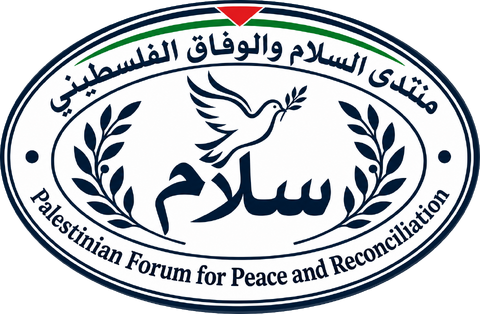

Palestinian Forum for Peace and Reconciliation
Gaza, Palestine
العربية
Home
About
Our work
Programs and projects
News and activities
Contact
Culture · Dialogue · Social cohesion
News and activities
The Forum’s news and activities will appear here as updates become available.